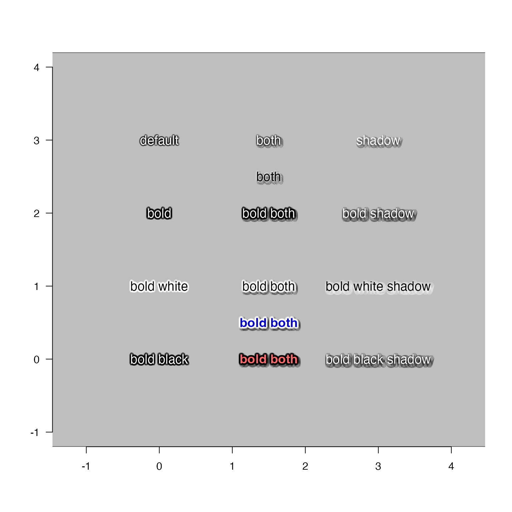

Get and set options for shadowText
shadowText_options(
r = getOption("jam.shadow.r", 0.15),
n = getOption("jam.shadow.n", 8),
outline = getOption("jam.outline", TRUE),
alphaOutline = getOption("jam.alphaOutline", 0.4),
shadow = getOption("jam.shadow", FALSE),
shadowColor = getOption("jam.shadowColor", "black"),
alphaShadow = getOption("jam.alphaShadow", 0.2),
r_ex = 1,
alpha_ex = 1,
preset = c("none", "default", "bold", "bold white", "bold black", "both", "shadow",
"bold shadow", "bold white shadow", "bold black shadow", "bold both"),
verbose = FALSE,
...
)numeric radius used for outline or shadow
numeric number of shadow steps to render around each text label
logical indicating whether to render shadowText
as an outline (default), or when outline=FALSE it renders a
drop shadow offset using offset which by default is slightly
down and to the right of the text labels.
numeric value for alpha transparency used for
label outlines when outline=TRUE, with values expected
between 0 (fully transparent) and 1 (not transparent).
logical indicating whether to render shadowText as a
shadow, or not (default).
character R color which defines the color used
for the outline or shadow for each text label.
numeric value for alpha transparency used for
label shadows when shadow=TRUE, with values expected
between 0 (fully transparent) and 1 (not transparent).
numeric expansion factor used to adjust the radius r.
The value for r is defined based upon the arguments provided,
then is multiplied by the r_ex expansion factor.
The result is stored in option "jam.shadow.r".
numeric expansion factor used to adjust the
alpha transparency of both alphaOutline and alphaShadow.
Values will be maintained no lower than 0 and no higher than 1.
The values for alphaOutline and alphaShadow are defined
based upon the arguments provided, then are multiplied by the
alpha_ex expansion factor.
The result is clipped to range 0,1 using jamba::noiseFloor().
The resulting values are stored in options
"jam.alphaOutline" and "jam.alphaShadow", respectively.
character string which defines a preset with
associated settings. Any value other than "none" will cause
all other options to use the preset settings.
"none": no preset settings are applied
"default": reverts all options to the original default values,
which produces an outline, and not a drop shadow.
The color will use shadowColor which allows using all other settings
from this preset, except with custom color.
"bold": makes output produce visibly more distinct outline,
with no drop shadow.
The color will use shadowColor which allows using all other settings
from this preset, except with custom color.
"bold white": same as "bold" except default text color is white
"bold black": same as "bold" except default text color is black
"both": applies "default" and enables drop shadow
"shadow": uses suggested default values to produce a drop shadow,
and not an outline.
The color will use shadowColor which allows using all other settings
from this preset, except with custom color.
"bold shadow": same as "shadow" except the shadow is more distinct.
The color will use shadowColor which allows using all other settings
from this preset, except with custom color.
"bold white shadow": same as "bold shadow" with white shadow
"bold black shadow": same as "bold shadow" with black shadow
"bold both": same as "bold" except also enables bold shadow
logical indicating whether to print verbose output
additional arguments are ignored.
logical indicating whether to reset values to their
respective defaults, prior to applying any other updates
list with the following options for shadowText():
jam.shadow.r
jam.shadow.n
jam.outline
jam.alphaOutline
jam.shadow
jam.shadowColor
jam.alphaShadow
This function is intended to be a convenient method to get and set
options to be used with jamba::shadowText().
This function stores the resulting values in options() for
use by shadowText().
Other jam plot functions:
adjustAxisLabelMargins(),
coordPresets(),
decideMfrow(),
drawLabels(),
getPlotAspect(),
groupedAxis(),
imageByColors(),
imageDefault(),
minorLogTicksAxis(),
nullPlot(),
plotPolygonDensity(),
plotRidges(),
plotSmoothScatter(),
shadowText(),
showColors(),
smoothScatterJam(),
sqrtAxis(),
usrBox()
nullPlot(doBoxes=FALSE, xlim=c(-1, 4), ylim=c(-1, 4), asp=1);
usrBox(fill="grey")
cex <- 1.2
axis(1);axis(2, las=2)
shadowText_options(preset="default")
shadowText(x=0, y=3, "default", cex=cex)
shadowText_options(preset="bold")
shadowText(x=0, y=2, "bold", cex=cex)
shadowText_options(preset="bold white")
shadowText(x=0, y=1, col="black", "bold white", cex=cex)
shadowText_options(preset="bold black")
shadowText(x=0, y=0, col="white", "bold black", cex=cex)
shadowText_options(preset="shadow")
shadowText(x=3, y=3, "shadow", cex=cex)
shadowText_options(preset="bold shadow")
shadowText(x=3, y=2, "bold shadow", cex=cex)
shadowText_options(preset="bold white shadow")
shadowText(x=3, y=1, col="black", "bold white shadow", cex=cex)
shadowText_options(preset="bold black shadow")
shadowText(x=3, y=0, col="white", "bold black shadow", cex=cex)
shadowText_options(preset="both")
shadowText(x=1.5, y=3, col="white", "both", cex=cex)
shadowText(x=1.5, y=2.5, col="black", "both", cex=cex)
shadowText_options(preset="bold both")
shadowText(x=1.5, y=2, col="white", "bold both", cex=cex)
shadowText(x=1.5, y=1, col="black", "bold both", cex=cex)
shadowText(x=1.5, y=0.5, col="blue3", "bold both", cex=cex, font=2)
shadowText(x=1.5, y=0, col="indianred1", "bold both", cex=cex, font=2)

shadowText_options(preset="default")